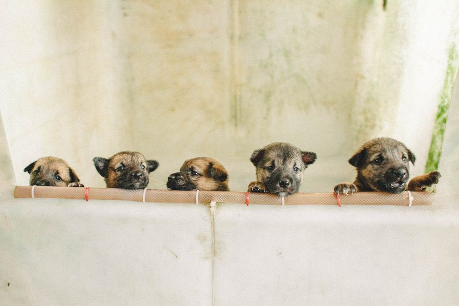
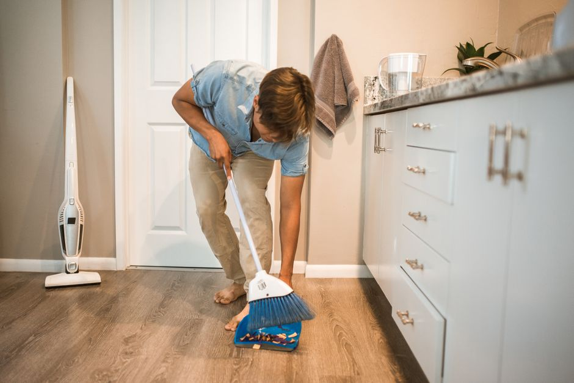

Cleaning Your Dog's Niche: Top Tips for Effective Hygiene

Photo: Bảo Minh / Pexels
Introduction
Cleaning a dog's niche, or sleeping area, is essential for maintaining both the comfort and health of your furry friend. A clean and well-maintained area can significantly reduce the risk of skin irritations, bacterial growth, and odor. In this article, we will explore the best practices for effectively cleaning your dog's niche.
Step-by-Step Guide to Cleaning Your Dog's Niche
1. Assess the Situation
Before you start cleaning, assess the current state of your dog's niche. Determine whether it needs a quick clean or a deep clean. Quick cleans can be done daily, while deep cleans should be performed weekly.
2. Remove Excess Waste

Photo: RDNE Stock project / Pexels
The first step in cleaning is to remove any visible waste. Use a broom or a vacuum cleaner to sweep away any loose hair, fur, or debris. For carpets and bedding, a vacuum cleaner with a soft brush attachment works best.
3. Spot Clean
Spot clean any areas that have visible stains. Use a damp cloth or sponge with a mild pet-safe cleaner to gently wipe away any mess. Avoid harsh chemicals that can be harmful to your dog.
4. Deep Clean the Bedding
For a deep clean, wash the bedding regularly. Use a washing machine on a warm cycle, or hand wash with warm water and a mild pet detergent. Ensure that the bedding is completely dry before returning it to your dog's niche.
5. Disinfect the Area
After cleaning the bedding, disinfect the surface of the niche. Use a pet-safe disinfectant that is safe for both your dog and the environment. Follow the instructions on the product label for the best results.
6. Air Out the Niche
After cleaning, allow the niche to air out for at least an hour. This helps to eliminate any lingering odors and ensures that the area is completely dry before your dog returns to it.
7. Regular Maintenance
To keep your dog's niche clean, establish a regular maintenance routine. Daily quick cleans can help prevent messes from becoming too difficult to handle. Weekly deep cleans will ensure that the area remains hygienic and comfortable for your dog.
Additional Tips for Effective Cleaning
1. Choose the Right Bedding
Invest in high-quality, machine-washable bedding that is easy to clean. Materials like microfiber or bamboo are great options as they are soft and easy to care for.
2. Use Pet-Safe Cleaning Products
Always use pet-safe cleaning products that are gentle on your dog's skin and safe for use around pets. Look for products that are biodegradable and environmentally friendly.
3. Consider Your Dog's Health
If your dog has any skin conditions or allergies, choose cleaning products that are hypoallergenic and free from harsh chemicals. Regularly check your dog's skin for any signs of irritation or infection.
4. Rotate Bedding and Cleaners
Rotating bedding and cleaners can help prevent the buildup of allergens and bacteria. This also ensures that your dog's niche remains fresh and hygienic.
5. Keep the Area Tidy
Encourage your dog to stay clean by keeping their niche tidy. Avoid leaving toys or other items that can attract dirt and bacteria. Regularly inspect the area for any signs of clutter and remove it as needed.
Conclusion
Cleaning your dog's niche is an essential part of ensuring your pet's health and happiness. By following these steps and tips, you can maintain a clean and comfortable environment for your furry friend. Remember, a clean niche not only prevents odors and bacteria but also helps to reduce the risk of skin irritations and other health issues.
Recommended products
As an Amazon Associate, I earn from qualifying purchases.